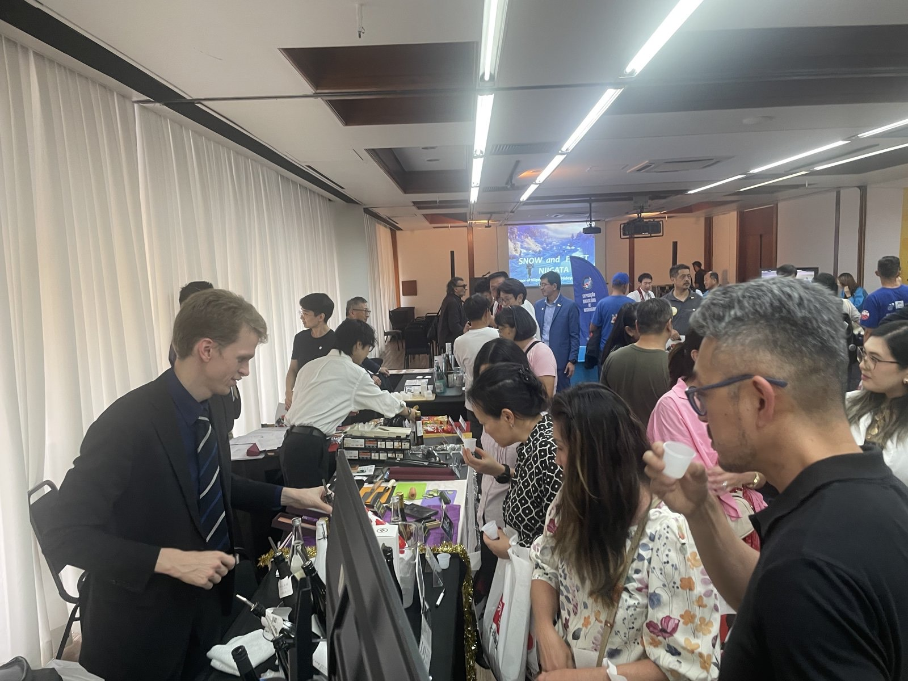

調査、企画、商談、運営、輸出、報告を、必要な範囲で依頼できます。
市場調査・現地リサーチ。価格、規制、競合、流通を現地で確かめます。
事業構想・スキーム設計。目的と成果イメージを整理し、実施可能な形へ落とし込みます。
ビジネスマッチング。現地バイヤー・パートナーとの商談機会をつくります。
展示会・イベントの現地運営。ブース設営から当日運営までを現場で担います。
貿易実務・輸出入サポート。継続的な取引へつなげる実務を支援します。
成果報告・次年度提案。次の意思決定へつながる形で実施結果をまとめます。
対象、予算、時期が未定でも構いません。現在分かっていることと、まだ決まっていないことを整理します。
支援範囲を相談する